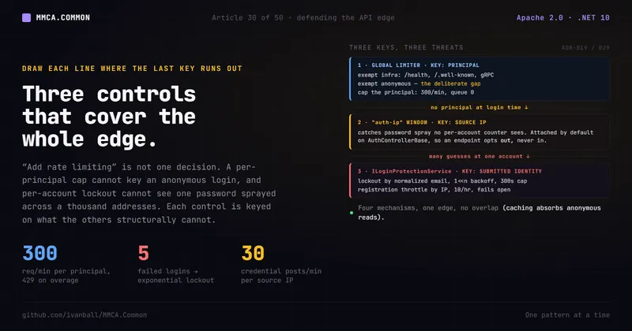

Auth & the edge · No. 30
Defending the API edge: three controls that cover the whole surface

A global "N requests per minute" limiter feels like edge protection until you notice what it cannot do: it cannot key an anonymous login attempt to a principal, because at login time there is no principal yet. So the credential-stuffing bot sails straight through the exemption. Lock the account after five failures and you catch the bot guessing one address; you still miss one password sprayed across a thousand of them. Here are the three complementary controls that close the gap, and why it takes three.
You turn on rate limiting and you feel safer. The middleware ships in ASP.NET Core, you wire a global limiter at "300 requests per minute," and the abusive-client problem feels handled. A scraper stuck in a loop, a buggy SPA retrying forever, one account hammering an expensive endpoint: all capped.
Then you think about how you would actually cap that 300-per-minute. By what key? If you partition by IP, you have a problem the moment a Blazor Server UI fronts your public browsing: every anonymous visitor shares the UI host's outbound IP, so the IP bucket throttles all of them as if they were a single abuser. If you partition by authenticated principal instead, you have the opposite problem: an anonymous request has no principal to key on. And the single most attractive anonymous target you have, the login and registration endpoints, is exactly where there is no principal yet. A credential-stuffing bot submitting a thousand email/password guesses is, to a per-principal limiter, a thousand unauthenticated requests with nothing to count them by.
So the global limiter has to make a choice, and it makes the honest one: it exempts anonymous traffic rather than throttle legitimate shared-origin browsing, with one narrow metered exception for the real-time hub paths. Which means the most-attacked endpoints in the whole application are the ones the limiter deliberately does not cover. That is not a bug in the limiter. It is the boundary of what a per-principal request cap can do, and it is the reason one layer is never enough at the edge.
Why it matters
"Add rate limiting" is not a decision. The load-bearing questions are who gets limited, by what partition key, and what is exempt. A naive global IP bucket gets all three wrong for this deployment: it throttles cached public reads that should be cheap, it throttles every Blazor Server visitor as one shared-IP abuser, and it treats login brute-force as if it were the same threat as general overload when it is a completely different one with a completely different control.
The threats genuinely differ. General overload is an authenticated principal driving too much database work, and the right control is a per-principal request cap. Credential stuffing is an anonymous attacker guessing passwords against a known email, and the right control is account lockout keyed on the submitted identity. Registration spam is an anonymous attacker creating accounts in bulk from an IP, and the right control is a per-IP signup throttle. And password spray is one password tried once each against a thousand different emails, which every per-account counter reads as a single failure and the anonymous-exempt global limiter never sees at all: the right control there is a cap on credential submission per source. One global bucket conflates all of them and serves none of them well.
So MMCA.Common does not ship one limiter. It ships three controls, drawn precisely along the lines the first one cannot cross: an authenticated-only global limiter that caps attributable, expensive traffic per principal, a pre-authentication service that keys on the identity being tried rather than on a principal, and a per-IP throttle on the anonymous auth endpoints that catches the spray neither of the other two can count. Together they cover the whole edge.
The MMCA answer: an authenticated-only global limiter, plus two controls for the surface it exempts
Layer one: cap the traffic that is both attributable and expensive
AddCommonRateLimiting (in MMCA.Common.API, the partial
Source/Presentation/MMCA.Common.API/Startup/WebApplicationBuilderExtensions.RateLimiting.cs:393) installs a
GlobalLimiter (:401-402) that runs on every request. Its partition function,
GlobalRateLimitPartition (WebApplicationBuilderExtensions.RateLimiting.cs:141-166), makes three decisions
in order, and the order is the whole design.
First, it exempts infrastructure traffic outright. IsRateLimitBypassed (:46-50) sends the request to
GetNoLimiter("__infra") (:145) for /health (:47), /alive (:48), JWKS and OIDC discovery under
/.well-known (:49), and any request that routed to a mapped gRPC method (IsGrpcEndpoint, :50,
implemented at :107-126). That last arm is keyed on the routed endpoint's Grpc.AspNetCore.Server
metadata (GrpcServerMetadataNamespace, :99), never on the request's Content-Type, and the remark above
it says why (:33-39, SEC-Common-44): a content type is caller-supplied and unverifiable, so keying on one
hands any authenticated account the no-limiter partition for the price of stamping
Content-Type: application/grpc on an ordinary request. Endpoint metadata is produced by routing from the
server's own MapGrpcService registrations, so it cannot be forged, and the predicate runs from middleware
that sits after UseRouting, so the endpoint is already resolved (:38-39). All of these are legitimately
high-frequency: a probe that gets throttled is an outage, and a JWKS fetch the auth middleware depends on
must never be capped.
Second, it hands anonymous traffic to its own partition, which is a no-limiter for almost all of it. When
httpContext.User?.Identity?.IsAuthenticated != true (:148) the request goes to AnonymousPartition
(:150, declared at :62-72), which returns GetNoLimiter("__anonymous") (:72) for every path but one.
That is the deliberate gap: public reads are output-cached and cheap, anonymous Blazor Server browsing
shares one IP (:56-61), and login brute-force has its own controls (:326-329). None of those should be
counted by a per-principal limiter.
The exception is a real-time hub. IsAnonymousHubRequest (:82-92) matches the request path against
HubPathPrefixes (default ["/hubs"], RateLimitingSettings.cs:91), and a match is metered per client
IP at AnonymousHubPermitLimit (default 60, RateLimitingSettings.cs:99) under Redis scope "hub"
(WebApplicationBuilderExtensions.RateLimiting.cs:67) with allowDistributed: true (:71). A hub request
with no readable IP is not waved through: it shares one "anonymous-hub" bucket (:66). The reason for
metering sits on the setting (RateLimitingSettings.cs:74-90, SEC-ADC-25): the gateway bypasses /hubs at
the edge, because ADR-024's hub authenticates from a query-string token the edge cannot read, which leaves
/hubs/*/negotiate as the one anonymous route nothing else counts, where an unauthenticated loop costs full
middleware plus auth-reject CPU per request. Authenticated hub traffic is untouched by this: it already
takes the per-user partition (RateLimitingSettings.cs:87-89).
Third, and only for an authenticated caller, it caps. The partition key is the subject claim from
FindUserIdValue(), falling back to the principal's identity name, then the remote IP, then a literal
"authenticated" (WebApplicationBuilderExtensions.RateLimiting.cs:153-156). The subject leads because it
is unique per account, while the name claim carries the full name, which two users can share (:128-130).
The final fallback is a shared bucket, not a free pass: an authenticated request with no subject, no name
and no IP is still counted, together with every other such request. That key goes to
CreateLimitedPartition (:158-165, declared at :207-283), which by default builds a fixed one-minute
window with a permit limit of GlobalPermitLimit, which defaults to 300 (RateLimitingSettings.cs:40),
and a queue limit of zero so overage is rejected rather than buffered
(WebApplicationBuilderExtensions.RateLimiting.cs:276-282). Rejection is a 429 Too Many Requests
(:399).
The code is short enough to read whole. This is condensed from the real partition function
(WebApplicationBuilderExtensions.RateLimiting.cs:141-166) plus the anonymous partition it delegates to
(:62-72). The factory both of them call has two further branches, a sliding window (:264-274) and a
shared Redis counter (:234-262), which are the configuration layer covered further down; neither is on by
default:
// Illustrative of the real GlobalRateLimitPartition shape (condensed, default settings).
// Order is load-bearing: infra exempt, then the anonymous partition, then cap the principal.
internal static RateLimitPartition<string> GlobalRateLimitPartition(HttpContext ctx, RateLimitingSettings settings)
{
if (IsRateLimitBypassed(ctx)) // /health, /alive, /.well-known, gRPC endpoints
return RateLimitPartition.GetNoLimiter("__infra");
if (ctx.User?.Identity?.IsAuthenticated != true) // the deliberate gap layers two and three fill
return AnonymousPartition(ctx, settings);
var partitionKey = ctx.User.FindUserIdValue() // the subject claim: unique per account
?? ctx.User.Identity.Name // the name claim: a full name, not unique
?? ctx.Connection.RemoteIpAddress?.ToString()
?? "authenticated"; // one shared bucket, still counted
return CreateLimitedPartition(ctx, partitionKey, redisScope: "global",
permitLimit: settings.GlobalPermitLimit, // default 300
queueLimit: 0, // reject overage, do not buffer
settings, allowDistributed: true);
}
// ...and the anonymous partition: no limiter anywhere except a configured hub path.
private static RateLimitPartition<string> AnonymousPartition(HttpContext ctx, RateLimitingSettings settings) =>
IsAnonymousHubRequest(ctx, settings)
? CreateLimitedPartition(ctx,
partitionKey: ctx.Connection.RemoteIpAddress?.ToString() ?? "anonymous-hub",
redisScope: "hub",
permitLimit: settings.AnonymousHubPermitLimit, // default 60
queueLimit: 0,
settings, allowDistributed: true)
: RateLimitPartition.GetNoLimiter("__anonymous");The same registration adds three named policies alongside the global limiter. Two of them, FixedPolicy
(WebApplicationBuilderExtensions.RateLimiting.cs:407-414) and UserPolicy (:416, partitioned
subject-first like the global limiter by UserPolicyRateLimitPartition at :176-191), are purely opt-in:
nothing applies them automatically, and they are there for the endpoint that knows it is special. The third
is the per-IP auth throttle registered at :426-428, and unlike the other two the framework attaches it for
you. That is layer three.
Layer two: a pre-authentication guard keyed on the submitted identity
The second layer exists for one reason: the first layer exempts the anonymous surface, and the login and
registration endpoints live on it. ILoginProtectionService
(Source/Core/MMCA.Common.Application/Auth/ILoginProtectionService.cs:10) is the contract, and
LoginProtectionService (Source/Core/MMCA.Common.Infrastructure/Auth/LoginProtectionService.cs:28) is
the implementation. It is registered unconditionally by AddInfrastructure
(Source/Core/MMCA.Common.Infrastructure/DependencyInjection.cs:57) via
TryAddScoped<ILoginProtectionService, LoginProtectionService>() (DependencyInjection.cs:158), so every
host that wires infrastructure has it. Its state lives entirely in ICacheService, never in a table, and
that sets its outage posture too: when the cache throws, a check answers success and an increment or reset
does nothing, each with a Warning log, so an unreachable cache suspends the limits instead of failing every
sign-in and registration (LoginProtectionService.cs:20-26, implemented at :61-65, :106-109,
:120-123, :143-147 and :175-178).
It keys on the submitted identity and the client IP, not on a principal, which is exactly what lets it work before authentication.
Login lockout, keyed by email. IncrementFailedAttemptsAsync(email)
(LoginProtectionService.cs:76) counts consecutive failures under a login:attempts:{email} cache key
(AttemptsKey, :47) inside a window of FailedAttemptWindowMinutes (default 30,
LoginProtectionSettings.cs:31). Once the count reaches MaxFailedAttempts (default 5,
LoginProtectionSettings.cs:18), it writes a lockout key with exponential backoff:
Math.Min(1 << Math.Min(excessAttempts, 30), _settings.MaxLockoutSeconds)
(LoginProtectionService.cs:102), so each extra failure doubles the wait up to the MaxLockoutSeconds
cap (default 300, LoginProtectionSettings.cs:24). The inner Math.Min(excessAttempts, 30) clamps the
shift exponent: a large excessAttempts would overflow the int shift (C# masks the count to five
bits, so 1 << 31 is negative and 1 << 32 wraps back to 1), silently shrinking the lockout, and 30
already exceeds any permitted cap. CheckLockoutAsync(email) (LoginProtectionService.cs:50) reads the
lockout key from the shared store rather than a replica's in-process copy (:56-59) and returns
Result.Failure(Error.TooManyRequests("Auth.TooManyAttempts", ...)) while it is present
(:67-71), and ResetFailedAttemptsAsync(email) (:113) clears both the attempt and lockout keys on a
successful login (:117-118).
That {email} is the normalized address, not the raw request string, and the difference is the whole
control. Both key builders, LockoutKey (LoginProtectionService.cs:45) and AttemptsKey (:47), route
the submitted value through EmailIdentity.Normalize
(Source/Core/MMCA.Common.Infrastructure/Auth/EmailIdentity.cs:22-31), the one address normalization the
auth services share. It runs the address through the same Email value object the user lookup uses and
falls back to a plain trim-and-lowercase when the address is malformed, so both builders produce one key
per account. Key off raw input instead and User@x.com, user@x.com and a padded variant hit one account
but get three independent counters: an attacker defeats the backoff by varying capitalization
(LoginProtectionService.cs:36-44).
Registration throttle, keyed by IP. CheckRegistrationRateLimitAsync(ip)
(LoginProtectionService.cs:127) fails with
Error.Unauthorized("Auth.RegistrationRateLimitExceeded", ...) (:149-154) once
MaxRegistrationsPerIpPerHour (default 10, LoginProtectionSettings.cs:37) signups from one IP land
inside RegistrationRateLimitWindowMinutes (default 60, LoginProtectionSettings.cs:43), tracked under a
registration:ip:{ip} key (RegistrationKey, LoginProtectionService.cs:181, built at :134 and read at
:141). IncrementRegistrationCountAsync(ip) (:158) bumps that counter. A missing or empty IP is a
deliberate no-op that fails open (:129-132, :160-163): the check returns Result.Success() rather than
blocking a request it cannot attribute.
Every check returns Result (ADR-013), so the HTTP edge maps each failure through the shared error-type
table without the endpoint special-casing it, and the two failures land on different status codes. The
lockout is a TooManyRequests error, which maps to 429 (Source/Presentation/MMCA.Common.API/Middleware/ErrorHttpMapping.cs:31);
the registration throttle is an Unauthorized error, which maps to 401 (ErrorHttpMapping.cs:26). And
because the counters live in the same swappable ICacheService substrate, they self-expire by TTL: a
lockout is inherently ephemeral, so cache expiry is the reset.
Here is the backoff, the one line that does the work. It mirrors the tail of
IncrementFailedAttemptsAsync (LoginProtectionService.cs:94-104), with the source comment condensed, the
enclosing cache-outage try and the trailing .ConfigureAwait(false) elided:
if (newCount >= _settings.MaxFailedAttempts) // default 5
{
// newCount is a long; clamp before the int shift.
var excessAttempts = (int)Math.Min(newCount - _settings.MaxFailedAttempts, int.MaxValue);
// Clamp the shift exponent to 30: C# masks int shift counts to 5 bits, so 1 << 31 is
// negative and 1 << 32 wraps back to 1, silently shrinking the lockout.
var lockoutSeconds = Math.Min(1 << Math.Min(excessAttempts, 30), _settings.MaxLockoutSeconds); // doubles, cap 300s
// LockoutKey normalizes the email first: one key per account, no principal needed.
await cacheService.SetAsync(LockoutKey(email), true, TimeSpan.FromSeconds(lockoutSeconds), cancellationToken);
}Layer three: throttle anonymous credential submission per source, by default
Two layers still leave one threat standing, and it is the one an attacker reaches for precisely because lockout works. Per-email lockout counts failures against a single account, so it sees five bad guesses at one address. Password spray inverts the shape: one popular password tried once each against a thousand different addresses. Every per-account counter reads one failure, nothing trips, and the global limiter never sees it either, because the attempts are anonymous and the anonymous partition meters only the hub paths.
RateLimitPolicyAuthIp, the "auth-ip" policy (WebApplicationBuilderExtensions.RateLimiting.cs:27,
rationale in its XML docs at :20-26), is the control shaped for that: a fixed one-minute window keyed on
the client IP, applied to the anonymous credential endpoints only. Its partition selector is
AuthIpRateLimitPartition (:305-319), which reads Connection.RemoteIpAddress (:307), the same
canonical source the global partition uses and the value UseForwardedHeaders has already resolved from
X-Forwarded-For earlier in the shared pipeline (:418-421). An IP it cannot read returns
GetNoLimiter("__unknown-ip") (:309-310) rather than collapsing every unattributable request into one
shared bucket, which would throttle the in-process test server and the integration tier to a standstill
(:289-295). That is a deliberate difference from the global limiter, which does pool unattributable
traffic into the shared "authenticated" and "anonymous-hub" buckets (:153-156, :66), and ADR-019
records the difference rather than a shared posture (Website/docs-src/adr/019-rate-limiting.md:101-106,
:296-308). Everything else goes through the same factory with PermitLimit = AuthIpPermitLimit and
QueueLimit = 0 (WebApplicationBuilderExtensions.RateLimiting.cs:311-318), rejected with the same 429.
It is registered by the same AddCommonRateLimiting call (:426-428), which takes a fifth parameter for
it:
// Illustrative of the real AuthIpRateLimitPartition shape (condensed).
// No limiter on an IP it cannot read, rather than pooling every such request into one bucket.
internal static RateLimitPartition<string> AuthIpRateLimitPartition(HttpContext ctx, RateLimitingSettings settings)
{
var clientIp = ctx.Connection.RemoteIpAddress?.ToString();
return clientIp is null
? RateLimitPartition.GetNoLimiter("__unknown-ip")
: CreateLimitedPartition(ctx, clientIp, redisScope: "auth-ip",
permitLimit: settings.AuthIpPermitLimit, // default 30
queueLimit: 0,
settings, allowDistributed: false); // never the shared counter: see below
}The signature that registers all of this reads
AddCommonRateLimiting(int permitLimit = 100, int queueLimit = 2, int perUserPermitLimit = 30, int globalPermitLimit = 300, int authIpPermitLimit = 30)
(WebApplicationBuilderExtensions.RateLimiting.cs:353); Store's hosts call exactly that overload, and ADC's
services call the IConfiguration overload covered under the settings layer below. The
default of 30 rather than a tighter 10 is documented on the parameter itself (:345-352): Blazor Server
circuits issue the login call server-side, so every Server-circuit user shares the UI host's IP and a
legitimate login burst has to fit inside the window. At 30 a minute a spray still drops from unlimited to
roughly 43,000 attempts per day per IP, with per-account lockout intact on top (:349-351). Tightening
toward 10 waits on real client IPs being forwarded end to end.
The part worth copying is not the policy, though. It is that the framework attaches it for you.
AuthControllerBase.LoginAsync
(Source/Presentation/MMCA.Common.API/Controllers/AuthControllerBase.cs:72, action at :76) and
RegisterAsync (:96, action at :102) both carry
[EnableRateLimiting(WebApplicationBuilderExtensions.RateLimitPolicyAuthIp)], so any consumer
inheriting the base gets per-IP protection without opting in. Its sibling
PasswordResetAuthControllerBase carries the same attribute on forgot-password (:78) and
reset-password (:102), and EmailConfirmationControllerBase carries it on send-email-confirmation
(EmailConfirmationControllerBase.cs:81) and confirm-email (:109), so the framework's default surface
is six anonymous credential actions. Both apps' EmailConfirmationController derive from that base and add
no attribute of their own (ADC EmailConfirmationController.cs:32, Store :33), which ADR-019 records
(Website/docs-src/adr/019-rate-limiting.md:78-85). The base documents why the default is attached rather
than opt-in (AuthControllerBase.cs:20-29): a policy that ships in the framework but leaves each app to
attach it is a policy an app can silently lack, and an app that simply inherited these actions would
have no spray protection at all. A consumer that inherits the base without calling AddCommonRateLimiting fails
at startup on an unregistered policy (:37-41), which is the loud failure rather than the silent one.
RefreshAsync carries no rate-limit attribute at all (attribute block :124-129, action :130), and
that is deliberate rather than an oversight (:30-36): refresh is automatic and periodic rather than
user-initiated, Blazor Server circuits issue it server-side so every Server-circuit user shares one IP,
and refresh tokens are high-entropy, so brute force is not the threat password spraying is. A per-IP
window there would throttle ordinary token renewal for everyone behind that host.
The settings layer: the same three controls, tunable without a recompile
There are three controls, not four: the settings layer is configuration, not another defence. ADR-019
(Website/docs-src/adr/019-rate-limiting.md:162-219) records what it buys, the ability to tune the three
without a recompile, and one way to make several of them mean the same thing behind a load balancer.
The limits live in RateLimitingSettings
(Source/Presentation/MMCA.Common.API/RateLimiting/RateLimitingSettings.cs:21), bound from a
"RateLimiting" configuration section (:24) with a [Range] on every count.
AddCommonRateLimiting has three overloads: the permit-count one quoted above
(WebApplicationBuilderExtensions.RateLimiting.cs:353-361), which only builds a settings object and
delegates; an IConfiguration one that binds the section with validation on start and falls back to a
default instance when it is absent (:371-383, ValidateOnStart at :378); and the settings one that
actually calls AddRateLimiter (:393-430, the call at :397). Every default matches the framework's
shipped value, so a host that configures nothing behaves exactly as described above.
The section also holds the two hub controls layer one uses, HubPathPrefixes
(RateLimitingSettings.cs:91) and AnonymousHubPermitLimit (:99), so which anonymous paths are
metered, and how hard, is a deployment decision rather than a constant.
Two knobs do more than relocate a constant. Algorithm (RateLimitingSettings.cs:53) can select
RateLimitAlgorithm.SlidingWindow (RateLimitAlgorithm.cs:22) instead of the default FixedWindow
(:15), dividing the same one-minute window into SegmentsPerWindow segments (default 4,
RateLimitingSettings.cs:62) so a caller cannot spend a full minute's allowance at the end of one
window and again at the start of the next. That is a smoothing choice, not a new cap. And Distributed
(:72, default false) swaps the in-process counter for RedisFixedWindowRateLimiter
(RateLimiting/RedisFixedWindowRateLimiter.cs:40), which counts one key per partition per minute in
Redis so N replicas share one allowance instead of holding N of them.
Exactly three partitions may take that shared counter: the global limiter (Redis scope "global",
WebApplicationBuilderExtensions.RateLimiting.cs:161, allowDistributed: true at :165), UserPolicy
(scope "user" at :186, :190), and the anonymous hub partition (scope "hub" at :67, :71). The
"auth-ip" policy passes allowDistributed: false (:318), and so does FixedPolicy (:414). That is
deliberate, and the reason sits on the factory parameter itself (:220-224): per-account login protection
already backs the per-IP window, and a login throttle that fails open on a Redis outage is a worse trade
than one that stays local. ADR-019 states the same three-partition scope and adds the cost side, that
making auth-ip distributed would put a Redis round trip on the login path to tighten a limit whose
per-replica multiplication its generous default already absorbs (019-rate-limiting.md:185-202).
Whether the section reaches the limiter is a host decision, because a declared section only binds through
the IConfiguration overload. Every ADC service calls it: Identity
(MMCA.ADC/Source/Services/MMCA.ADC.Identity.Service/Program.cs:165), Conference
(MMCA.ADC.Conference.Service/Program.cs:221), Engagement (MMCA.ADC.Engagement.Service/Program.cs:151)
and Notification (MMCA.ADC.Notification.Service/Program.cs:144). Notification also declares a section in
its own settings, "RateLimiting": { "AnonymousHubPermitLimit": 600 }
(MMCA.ADC/Source/Services/MMCA.ADC.Notification.Service/appsettings.json:53-55), with a rationale above it
(:44-52) that the venue's NAT puts roughly 67 attendees behind a single address, so a 60-per-minute
budget goes in seconds when the room reconnects; the comment at its call site says the binding is what lets
that 600 reach the hub partition (Program.cs:141-143). ADC production sets the rest as container-app
environment variables. RateLimiting__Distributed=true is on the Identity, Conference, Engagement and
Notification apps (MMCA.ADC/infra/main.bicep:1768, :2003, :2140, :2294), and each of those services
registers the Redis connection the shared counter needs through AddRedisCaching (for example
MMCA.ADC.Identity.Service/Program.cs:121-130), so ADC's global, UserPolicy and anonymous-hub partitions
count in Redis while auth-ip and FixedPolicy stay per replica. RateLimiting__AuthIpPermitLimit=300 is
set on Identity under conferenceMode only (main.bicep:1870); without the key the window stays at the
default 30 (Program.cs:155-164). Store's three hosts call the permit-count overload with no arguments
(MMCA.Store.Sales.Service/Program.cs:148, MMCA.Store.Catalog.Service/Program.cs:141,
MMCA.Store.Identity.Service/Program.cs:135), so Store runs the in-memory fixed-window defaults this
article describes.
Where the three controls meet
This is the connective tissue, and it is worth stating plainly. The global limiter protects authenticated
throughput per principal and exempts anonymous traffic outside the hub paths. The "auth-ip" policy
covers that exempted surface at the HTTP edge, keyed per source, and catches the one-guess-per-account
spray that no per-account counter can see. The login-protection service covers the same surface one level
in, keyed per submitted identity for lockout and per IP for signup, and catches the
many-guesses-at-one-account run the per-source window would not reach on its own. Anonymous read abuse,
meanwhile, is absorbed by output caching rather than any of the three. Four mechanisms, one edge, no
overlap: each one is keyed on something the others structurally cannot key on.
Both real apps adopt the second layer through one shared base rather than wiring it per app. The
check-before, increment-on-failure, reset-on-success sequence around login and the registration check
around sign-up lives in AuthenticationServiceBase<TUser>
(Source/Core/MMCA.Common.Application/Auth/AuthenticationServiceBase.cs), which calls
CheckLockoutAsync (:136), IncrementFailedAttemptsAsync (:156, :163, and a third time later in the
class at :557), ResetFailedAttemptsAsync (:207), CheckRegistrationRateLimitAsync (:242), and
IncrementRegistrationCountAsync (:301). The ADC and Store AuthenticationService are sealed subclasses
that take ILoginProtectionService as a constructor parameter (ADC AuthenticationService.cs:53, Store
:29) and forward it to the base constructor (ADC :62, Store :36); ADC's subclass additionally injects
IExternalLoginEmailVerifier (:54) for its external OAuth flow. The login and registration workflow, and
every protection call in it, lives once in the base.
Two framework call sites sit outside it. ResetPasswordHandlerBase takes ILoginProtectionService as a
constructor dependency
(Source/Core/MMCA.Common.Application/Users/UseCases/ResetPassword/ResetPasswordHandlerBase.cs:45) and
calls ResetFailedAttemptsAsync(request.Email) once the new credential is persisted (:110), so a user
who resets the password because of a lockout is not left locked out by it. ChangePasswordHandlerBase
takes it too
(Source/Core/MMCA.Common.Application/Users/UseCases/ChangePassword/ChangePasswordHandlerBase.cs:47) and
runs the whole sequence on its own key: CheckLockoutAsync before the current-password check (:89),
IncrementFailedAttemptsAsync on a wrong current password (:97) and ResetFailedAttemptsAsync on a
right one (:102). That is the one principal-keyed use of the service: the counter is
password-change:{userId} (:129, rationale at :37), so a signed-in session is not an unthrottled
password oracle, and a change-password lockout does not lock the owner out of sign-in. ADR-029 records both
(Website/docs-src/adr/029-authentication-brute-force-protection.md:69-74, :112-124). Settings bind from
the "LoginProtection" configuration section (LoginProtectionSettings.cs:12).
They adopt the third the same way, and the redundancy in that is deliberate. ADC's Identity service
re-declares the attribute on both actions it overrides
(MMCA.ADC.Identity.API/Controllers/AuthController.cs:55 on register and :116 on login, the overrides
at :59 and :120) and tunes the window from configuration through the RateLimiting section
(MMCA.ADC.Identity.Service/Program.cs:165, with the call-site comment recording that its own local copy
of the policy was deleted because a duplicate policy name throws at startup, :155-164). Store's Identity
service takes the framework default
(MMCA.Store.Identity.Service/Program.cs:135) and its RegisterAsync override re-declares the attribute
too (MMCA.Store.Identity.API/Controllers/AuthController.cs:50, the override at :54), with a doc
comment saying exactly what that line is for (:41-46): the attribute is inherited by an override, so
re-applying it is convention parity with ADC plus a regression pin, not a live hole being closed.
That an override keeps the policy anyway is asserted rather than taken on faith about framework
internals. AuthControllerBaseRateLimitTests pins both halves of it directly.
EnableRateLimitingAttribute_IsDeclaredInherited
(MMCA.Common.API.Tests/Controllers/Auth/AuthControllerBaseRateLimitTests.cs:51-55) reads
AttributeUsage.Inherited off the attribute type by reflection and requires it to be true, because
ADR-019 cites attribute inheritance as the reason a derived override keeps the per-IP policy.
DerivedOverride_WithoutTheAttribute_StillCarriesTheAuthIpPolicy (:61-79) then builds a derived
controller that overrides RegisterAsync without the attribute and asserts the policy still resolves
through GetCustomAttributes(inherit: true). The test's own comment is careful about what that buys
(:57-60): it pins the mechanism, it does not bless a bare override. Applying the attribute on every
override stays the convention precisely because a dropped security attribute is invisible.
The UI origin is its own edge, and the framework ships its kit
Every control above bounds traffic at an API host. The server-rendered Blazor UI host is the case none of
them reaches: it is a separate externally reachable origin on its own Container Apps FQDN, so the gateway's
edge limiter guards the gateway's own hostname and never sees a single request to the front door a browser
actually loads (ADR-124, Website/docs-src/adr/124-blazor-circuit-ceiling-ui-edge.md:17-24).
So that origin carries its own limiter. AddUiRateLimiting
(Source/Presentation/MMCA.Common.UI.Web/Hardening/UiRateLimitingExtensions.cs:175) and
UseUiRateLimiting (:225) put a per-client-IP fixed window, chained with a replica-wide concurrency
ceiling, in front of the host, both rejecting with 429 (:13-16); the concurrency half defaults to 200
permits (GlobalConcurrencyLimit, UiRateLimitingSettings.cs:76). The Blazor circuit transport,
/_blazor, stays inside the per-IP window but out of the concurrency ceiling, because a circuit WebSocket
would hold its lease for the circuit's whole lifetime (UiRateLimitingExtensions.cs:36-42).
A page load there is also not a cheap request. Under the Interactive Auto render strategy the first render
is always a Server circuit, so every page load opens one, and each open circuit holds live render state
for as long as the connection lives, inside a container of 0.25 vCPU and 0.5 GiB
(Source/Presentation/MMCA.Common.UI.Web/Hardening/BoundedCircuitHandler.cs:15-21,
BlazorCircuitLimitSettings.cs:27-28). A rate limiter does not bound that: it bounds how fast requests
arrive, while a caller who opens circuits slowly enough to stay inside the window still accumulates them
(BlazorCircuitLimitSettings.cs:10-13). Neither do the CircuitOptions knobs
DisconnectedCircuitMaxRetained and DisconnectedCircuitRetentionPeriod, which bound only circuits that
have already dropped their connection and are being held for reconnect (BlazorCircuitLimitSettings.cs:13-15).
The settings type still tightens both, as defence in depth: 25 retained circuits (:46) for 60 seconds
(:57).
So the ceiling is on concurrency, and it is held by a CircuitHandler. BoundedCircuitHandler
(BoundedCircuitHandler.cs:43-45) counts opens and closes and refuses anything past MaxActiveCircuits,
default 200 per replica (BlazorCircuitLimitSettings.cs:38, derived from that container's memory and vCPU
at :27-35). It is registered as a singleton by AddBoundedBlazorCircuits() so one count spans the
replica: circuit handlers are resolved from each circuit's own scope, so a scoped registration would count
to one and cap nothing (BoundedCircuitHandler.cs:32-34). It runs last among the registered handlers,
Order => int.MaxValue (:57-61), so a refusal lands after cheaper handlers have done their work. The
count is race-safe by construction in both directions. The open path increments first and rolls back on
refusal (:70-76), because reading and then incrementing would let two simultaneous opens both take the
last free slot. The close path releases a permit only for a circuit the open path admitted, tracked in a
set keyed by reference (:47, added at :83, checked at :92-98), because the framework tears a refused
circuit down through the same close callback and that close would otherwise release a permit another
circuit holds (:37-38). Flooring the count at zero stays behind that as the last line of defence
(:100-106).
// The real open path (MMCA.Common.UI.Web/Hardening/BoundedCircuitHandler.cs:64-85), logging elided.
public override Task OnCircuitOpenedAsync(Circuit circuit, CancellationToken cancellationToken)
{
ArgumentNullException.ThrowIfNull(circuit);
var ceiling = settings.Value.MaxActiveCircuits;
// Increment first and roll back on refusal: reading then incrementing would let two
// simultaneous opens both observe the last free slot and both take it.
var active = Interlocked.Increment(ref _activeCircuits);
if (active > ceiling)
{
Interlocked.Decrement(ref _activeCircuits);
return Task.FromException(new InvalidOperationException(/* ...the ceiling, to the user... */));
}
_admitted[circuit] = 0; // only an admitted circuit releases a permit on close
return Task.CompletedTask;
}The refusal is a thrown exception, and the type says in place that this is the one spot where the Result
pattern does not apply (:24-29): CircuitHandler.OnCircuitOpenedAsync returns Task and has no
"refuse" return value, so a faulted task is the only way to stop a circuit from starting (:78-80), and
the contract belongs to the framework. Refusal is observable rather than silent, one Warning per refusal
naming the ceiling (:111-114).
Both halves are one framework kit in MMCA.Common.UI.Web, and both apps consume the same copy: each UI host
calls AddBoundedBlazorCircuits() (MMCA.ADC/Source/Hosts/UI/MMCA.ADC.UI.Web/Program.cs:82,
MMCA.Store/Source/Hosts/UI/MMCA.Store.UI.Web/Program.cs:86), AddUiRateLimiting (ADC :148, Store :95)
and UseUiRateLimiting() (ADC :221, Store :229). ADR-124 records the decision as three layers from one
framework kit (124-blazor-circuit-ceiling-ui-edge.md:46-48). A limiter and a ceiling bound different
resources, so the kit keeps them as two settings types bound from two sections rather than folding the
concurrency bound into the limiter (BlazorCircuitLimitSettings.cs:10-13).
Trade-offs, honestly
None of the three is a complete edge defence on its own, and the §11 review is explicit about the boundaries.
- Per-principal keying needs an authenticated identity, full stop. The global limiter can only key what it can attribute, so the anonymous surface must be covered separately. That is not a workaround; it is precisely why the other two controls exist. An uncached anonymous endpoint added later would have no global cap and would need its own control or a named policy.
- The limiter's placement is load-bearing. Per-user partitioning depends on the authenticated
principal already being populated when the limiter runs
(
WebApplicationBuilderExtensions.RateLimiting.cs:148,:153-154). Move the limiter relative to authentication in the pipeline and the partition sees a different or empty principal, which drops an authenticated caller into the anonymous partition. The gRPC exemption has the same property in the other direction: it reads the routed endpoint, so it depends on running afterUseRouting(:38-39). This is a config-order trap, not a code bug. - Attribute-shaped protection fails silently when it goes missing. The per-IP throttle is applied by
an attribute, so dropping it breaks nothing loudly: the endpoint simply stops being throttled and the
app keeps serving traffic. A host missing the attribute has no spray protection while every build
and analyzer stays green, which is why
AuthControllerBaseRateLimitTestsasserts the attribute's presence on the anonymous credential endpoints and its deliberate absence on refresh, directly (MMCA.Common.API.Tests/Controllers/Auth/AuthControllerBaseRateLimitTests.cs:15-21for the reasoning,:24-34and:40-45for the assertions). A security control that is invisible when it is missing needs a test whose only job is to notice. - The per-IP auth throttle is coarse, fail-open, and deliberately loose. Shared NAT, proxies and
Blazor Server circuits put many users behind one IP, which is exactly why the default is 30 a minute
rather than 10 (
WebApplicationBuilderExtensions.RateLimiting.cs:345-352), and an IP it cannot read is not limited at all (:309-310). It covers the six anonymous credential actions the framework bases carry, and deliberately not refresh. It raises the cost of spray from one source by orders of magnitude; it does not stop an attacker rotating across many. - Email-keyed lockout is a denial-of-service-on-the-user lever. An attacker can lock a known
account out by deliberately failing its logins. That is why the control is exponential backoff with a
short cap (default 300s,
LoginProtectionSettings.cs:24) plus a429that says only to try again later (LoginProtectionService.cs:67-71), not a hard permanent block. It bounds the harm to a brief self-healing lockout, an accepted availability-for-security trade. - Cache-scoped state weakens under scale-out, and for the limiter the fix is opt-in. In memory mode
the login-protection counters are per-replica and evaporate on restart, so a multi-replica deployment
that did not wire a distributed cache does not aggregate an attacker hitting different replicas; the
answer there is to wire a distributed cache once scaled out, which both apps do. The global limiter's
in-process counters have the same shape: across N replicas the effective ceiling is roughly N times the
configured limit. The framework ships a way out for that one, the shared Redis counter behind
Distributed = truefor the global,UserPolicyand anonymous-hub partitions (WebApplicationBuilderExtensions.RateLimiting.cs:165,:190,:71), but it defaults tofalse(RateLimitingSettings.cs:72). ADC turns it on for its four services in production (MMCA.ADC/infra/main.bicep:1768); Store does not, so there the ceiling is N times the limit. ADR-019 calls the trade-off narrowed rather than removed (Website/docs-src/adr/019-rate-limiting.md:215-219), and it stands exactly as written forauth-ipandFixedPolicy, which never take the shared counter. - Login protection fails open on a cache outage. The counters are a cache, and the cache never turns
its own outage into an error, so when it throws a lockout or registration check answers success and an
increment or reset does nothing, with one Warning log per call naming the operation
(
LoginProtectionService.cs:20-26,:190-192). An unreachable cache therefore suspends lockout and the registration throttle rather than failing every sign-in; theauth-ipwindow, which keeps its counters in process, still stands during the outage. ADR-029 records the decision (Revised 2026-10-03). - Turning the shared counter on can silently do nothing. Setting
Distributed = truein a host with noIConnectionMultiplexerregistered degrades to the in-memory limiter rather than failing startup (WebApplicationBuilderExtensions.RateLimiting.cs:259-261, documented atRateLimitingSettings.cs:64-71), and the Redis limiter itself fails open on a Redis fault, granting the lease and warning at most once per window (Website/docs-src/adr/019-rate-limiting.md:204-206). Both are the right posture for a backstop that must never become an outage, and both mean a misconfiguration here looks exactly like success. - The counter increment is not atomic, by decision.
IncrementAsyncis a read-modify-write on the cache, and the code says why in place (LoginProtectionService.cs:78-86): a RedisINCRwrites a plain string key, whileIDistributedCachereads entries back as hashes, so an atomic increment issued underneath the cache abstraction leaves a counter the cache itself cannot read. A readable counter is worth more than an atomic one. The accepted cost is that genuinely parallel attempts can overwrite each other's increments and undercount, so a concurrent burst can stay underMaxFailedAttempts; sequential guessing, which is what a credential-stuffing run against one account looks like, still trips the lockout. The same shape means each write refreshes the TTL, so both windows slide rather than staying anchored to the first attempt (:165-167), which only ever tightens the limit. ADR-029 records the whole trade, including the opt-inHybridCacheServicethat overrides the member with the same shape (029-authentication-brute-force-protection.md:82-101). - The per-IP registration throttle is coarse and fail-open. Shared NAT or proxy IPs throttle innocents
together, per-attacker IP rotation evades it, and a missing IP is a deliberate no-op
(
LoginProtectionService.cs:129-132). It raises the cost of bulk signup; it does not stop a determined distributed attacker. - The defaults are deployment-agnostic. 300 requests per minute per user is a coarse backstop, not a
tuned SLO. A service with heavier legitimate per-user traffic must raise
GlobalPermitLimit, a host with real client IPs can tightenAuthIpPermitLimit(every ADC service binds the wholeRateLimitingsection to configuration), and a stricter endpoint must opt into a named policy. Those knobs have a"RateLimiting"section to live in (RateLimitingSettings.cs:21-99), which makes tuning a deployment concern rather than a recompile, but reaching the section at all takes theIConfigurationoverload (WebApplicationBuilderExtensions.RateLimiting.cs:371-383), which every ADC service calls and no Store host does.
None of these argue against the layering. They are the edges of what each control is for: a per-principal cap protects attributable throughput, a per-source window protects anonymous credential submission, a pre-auth service protects the account being guessed, and together they cover what none of them covers alone.
Apply this even without MMCA
The shape ports to any ASP.NET Core service, with or without this framework:
- Pick the partition key before you pick the limit. "300 a minute" is meaningless until you answer "per what." Per authenticated principal caps attributable load without punishing shared-origin anonymous browsing; per IP does the opposite. Choose deliberately, because the key determines who you actually protect. And key the principal on a claim that is unique per account: a display name is not.
- Exempt infrastructure traffic explicitly, on something the caller cannot set. Health and liveness probes, JWKS and OIDC discovery, and inter-service RPC are legitimately high-frequency, and a limiter that throttles a probe causes the outage it was meant to prevent. Key the exemption on the routed endpoint rather than on a request header: a header is caller-supplied, so an exemption keyed on one is an exemption anybody can claim.
- Do not pretend one limiter covers the anonymous surface. A per-principal cap structurally cannot key a pre-authentication request. Name that gap and cover it with controls shaped to the threats that live there, rather than stretching the limiter to fit. Where an anonymous route is expensive and nothing upstream counts it, a real-time hub negotiate being the usual case, meter that one per client IP instead of exempting it with the rest.
- Key brute-force protection on the submitted identity, not the principal. At login there is no principal. Lockout has to key on the email being tried and the client IP, which is exactly what lets it run before authentication.
- Count the attempts a per-account counter cannot see. One password against a thousand addresses reads as one failure per account and trips nothing. A per-source window over the credential endpoints is the control for that, and it belongs on the shared base class so an endpoint has to opt out rather than opt in. Then test that the attribute is still there: a dropped security attribute breaks no behaviour a human would notice.
- Prefer backoff to a hard block, and TTL to a table. Exponential backoff frustrates automated guessing while a legitimate user's brief lockout self-heals, and cache-with-TTL state means a lockout's natural lifetime is its expiry, not a row you have to clean up.
- Bound concurrency separately from arrival rate. A rate limiter caps how fast requests come in; it says nothing about how much state stays resident. Where a request opens something that lives on (a server-rendered circuit, a long-lived connection, a session), cap the number held at once, in the host that holds them.
The takeaway: a request cap, a per-source credential throttle and a brute-force guard are not three flavors of the same control. The cap protects the authenticated surface it can attribute; the throttle protects the anonymous surface the cap must exempt; the guard protects the individual account neither of them counts. Draw the lines where each key runs out, put the right control on each side, and the whole edge is covered with no single mechanism pretending to do a job it structurally cannot.
What we covered: why "turn on rate limiting" is not one decision but three (who, by what key, what is
exempt), how MMCA.Common's authenticated-only global limiter (AddCommonRateLimiting) caps attributable
per-principal traffic subject-first and exempts infrastructure and anonymous traffic outside the real-time
hub paths, why that exemption leaves the most-attacked endpoints uncovered, how ILoginProtectionService
closes part of that gap with email-keyed exponential-backoff lockout and a per-IP registration throttle
that key on the submitted identity rather than a principal, how the "auth-ip" per-source window closes
the rest by catching password spray that no per-account counter can see and is attached by default on
AuthControllerBase, PasswordResetAuthControllerBase and EmailConfirmationControllerBase rather than
left to each app to remember, what the settings layer adds on top (a bound "RateLimiting" section, the
hub-path controls, a selectable sliding window, and an opt-in shared Redis counter for three of the
partitions, which ADC's services turn on in production), why the UI origin is its own edge with a framework
kit of its own (a per-IP window chained with a concurrency ceiling, plus a circuit ceiling), and the honest
boundaries in all three: principal-dependence, config order, silently-droppable attributes, shared-IP
coarseness, the DoS-on-the-user lever, cache state under scale-out, and fail-open login protection during a
cache outage.
Next in the series: Aspire, the one command that brings up the whole distributed stack locally.
MMCA.Common is Apache-2.0 licensed and open source. Star the repo, read the ADRs behind this pattern, or
dotnet add package MMCA.Common.API and try it.
- ⭐ Repo: https://github.com/ivanball/MMCA.Common
- 📄 ADR-019 (rate limiting), ADR-029 (brute-force protection) and ADR-124 (the UI-origin circuit
ceiling):
Website/docs-src/adr/in the docs site.
Tags: .NET, C Sharp, Security, Web API, Software Architecture